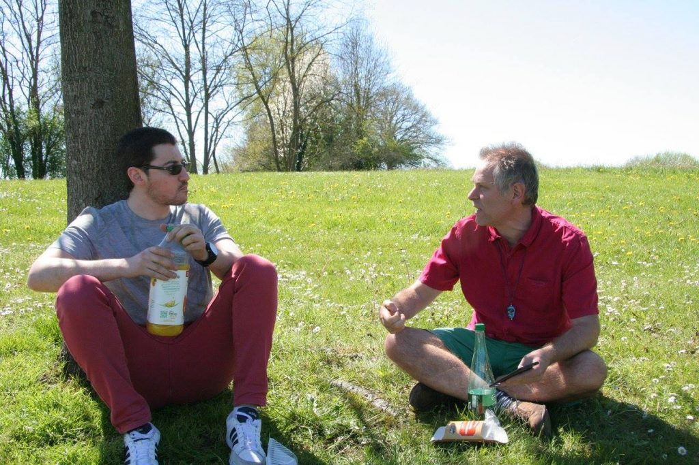

Aujourd’hui, c’est le grand départ pour tou·te·s les caravanier·e·s. Les 7 caravanes sont parties ! Toutes sont arrivées à destination sans encombre.
– À Grigny : une magnifique journée pour la caravane insoumise d’Île-de-France. Un accueil bienveillant des habitant·e·s de Grigny, très réceptifs au programme L’Avenir en Commun. Entendu lors du porte-à-porte : « j’ai reçu ma carte électorale, il y a une semaine, mon vote est pour vous ! ». Beaucoup de gens dégoûtés de la politique sont sensibles à l’argument de la 6e République avec le référendum révocatoire
– Sur la route de l’ouest : nos caravanier·e·s ont été accueilli·e·s à la fête des insoumis·es locale ! Une vraie réussite ! Repas végétarien, concert et théâtre ! Plus de 500 personnes sont venues participer à la fête !
– Sur la route du nord : les insoumis·es de la caravane sont arrivé·e·s sans encombre ! Juste le temps de partager une bière en centre-ville à Douai.
– Sur la route de l’est : bien arrivé·e·s à Troyes !
– Sur la route du sud-est : Un accueil sympathique des insoumis de Carcassonne ! On fête la victoire prochaine !

On annonce déjà le passage de la caravane dans la presse locale.
Accueil convivial des caravanier·e·s la veille de leur première étape !
– Sur la route du sud-ouest : nos caravanier·e·s sont bien arrivé·e·s malgré les bouchons. Prêt·e·s pour le meeting !
– Sur la route du centre : bien arrivé·e·s à Chartres !
Tou·te·s très motivé·e·s pour cette belle campagne à venir